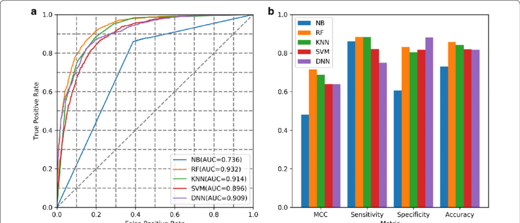

Machine Learning is a subset of Artificial Intelligence that focuses on building systems capable of learning from data to make predictions, classify information, or enhance decision-making processes.

Key Concepts in Machine Learning
- Data: The core of machine learning is data, which serves as the foundation for training algorithms.
- Algorithms: Instructions or sequences that allow machines to find patterns or classify data.
- Model Training: The process of feeding data to a machine learning algorithm to enable it to make predictions.
- Evaluation: Assessing the model's performance through metrics such as accuracy, precision, and recall.

Types of Machine Learning Algorithms
| Type | Description | Example Algorithms |
|---|---|---|
| Supervised Learning | Trained on labeled data to make predictions or classify data into specific categories. | Linear Regression, Decision Trees, Support Vector Machines |
| Unsupervised Learning | Finds patterns in unlabeled data without predefined categories. | K-means Clustering, Principal Component Analysis |
| Reinforcement Learning | Teaches a model to make a series of decisions based on rewards or penalties. | Q-Learning, Deep Q Networks |
Sample Data Representation
Machine Learning Model Performance Comparison
Statistical measures such as accuracy, precision, and recall help in evaluating the performance of models.
